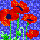

Quilts: Not Just For Beds
P.O. Box 1342 * Bellevue, WA 98009 * jlk@eskimo.com
Quilts: Not Just For Beds is a quilt pattern company based in the beautiful, but sometimes rainy, Pacific Northwest. Because of that rain, we have an abundance of beautiful flowers that serve as an inspiration for my patterns. Sometimes it's the vibrant colors and sometimes it's the flowers themselves.
 I'm really excited about the new patterns
that I have added this spring!!!!
They are applique, so you can do them no
matter what your skill level. For a quick easy project that can be completed
in an afternoon, use fusible web. Or if
you prefer handwork, you can do as I do and use needleturn, or use whatever
method you are most comfortable with. There are a total of twelve patterns that
can be made individually for wall hangings or pillows, or you can combine any
combination of the twelve for a 60" X 80" quilt.
I'm really excited about the new patterns
that I have added this spring!!!!
They are applique, so you can do them no
matter what your skill level. For a quick easy project that can be completed
in an afternoon, use fusible web. Or if
you prefer handwork, you can do as I do and use needleturn, or use whatever
method you are most comfortable with. There are a total of twelve patterns that
can be made individually for wall hangings or pillows, or you can combine any
combination of the twelve for a 60" X 80" quilt.
I update my page frequently, so hit the reload button on your browser to make sure you are getting the newest update.
I do need to warn you that some of these pages might take a while to download. Keeping that in mind,
make yourself a cup of tea, coffee, or whatever your pleasure happens to be, sit back, relax and
enjoy your travels through my website!
Jane L. Kakaley
PART SIX of Mystery Quilt #5!!!!

 Quilt Patterns
Quilt Patterns BlockMinder
BlockMinder Mystery Quilt #5
Mystery Quilt #5 Ordering Information
Ordering Information Customer Response
Customer Response
 Wholesale Inquiries please email jlk@eskimo.com for more information.
Wholesale Inquiries please email jlk@eskimo.com for more information.
 Links to other quilting pages
Links to other quilting pages

Your comments and questions are welcome. Email jlk@eskimo.com
Thank you for being visitor
Last updated on October 15, 2000.
This web site designed and maintained by Jane L. Kakaley
Copyright 2000, Jane L. Kakaley. All rights reserved.